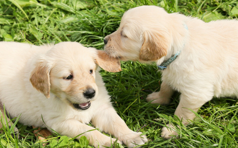
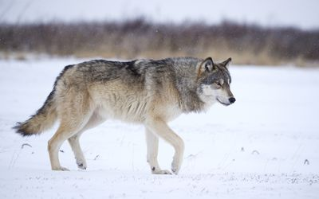
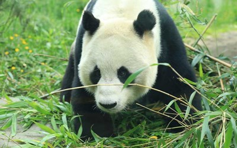
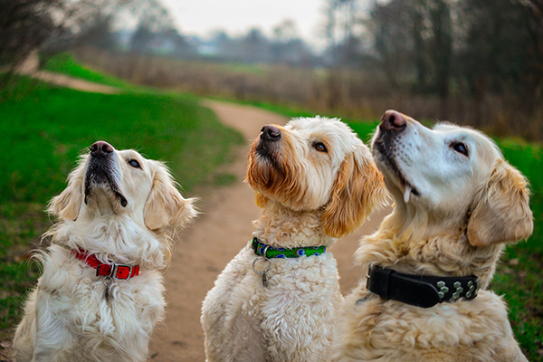
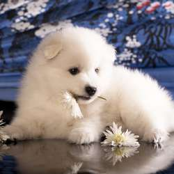
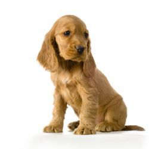
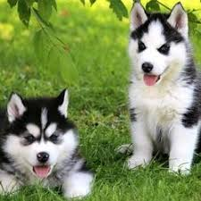
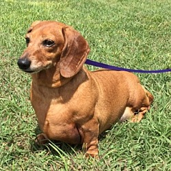

|

This page gives a list of domestic animals,[1] also including a list of animals which are or may be currently undergoing the process of domestication and animals that have an extensive relationship with humans beyond simple predation. This includes species which are semi-domesticated, undomesticated but captive-bred on a commercial scale, or commonly wild-caught, at least occasionally captive-bred. |

A carnivore meaning "meat eater" (Latin, caro, genitive carnis, meaning "meat" or "flesh" and vorare meaning "to devour"), is an organism that derives its energy and nutrient requirements from a diet consisting mainly or exclusively of animal tissue, whether through predation or scavenging. Animals that depend solely on animal flesh for their nutrient requirements are called obligate carnivore. |

A herbivore is an animal anatomically and physiologically adapted to eating plant material, for example foliage or marine algae, for the main component of its diet. As a result of their plant diet, herbivorous animals typically have mouthparts adapted to rasping or grinding. Horses and other herbivores have wide flat teeth that are adapted to grinding grass, tree bark, and other tough plant material. |
|

The domestic dog (Canis lupus familiaris when considered a subspecies of the wolf or Canis familiaris when considered a distinct species) is a member of the genus Canis (canines), which forms part of the wolf-like canids, and is the most widely abundant terrestrial carnivore. The dog and the extant gray wolf are sister taxa as modern wolves are not closely related to the wolves that were first domesticated, which implies that the direct ancestor of the dog is extinct. The dog was the first species to be domesticated and has been selectively bred over millennia for various behaviors, sensory capabilities, and physical attributes. |

The cat (Felis catus) is a small carnivorous mammal. It is the only domesticated species in the family Felidae and often referred to as the domestic cat to distinguish it from wild members of the family.[4] The cat is either a house cat, kept as a pet, or a feral cat, freely ranging and avoiding human contact. A house cat is valued by humans for companionship and for its ability to hunt rodents. About 60 cat breeds are recognized by various cat registries.Cats are similar in anatomy to the other felid species, with a strong flexible body, quick reflexes, sharp teeth and retractable claws adapted to killing small prey. |
|

The Japanese Spitz (日本スピッツ Nihon Supittsu) is a small to medium breed of dog of the Spitz type. The Japanese Spitz is a companion dog and pet. There are varying standards around the world as to the ideal size of the breed, but they are always larger than their smaller cousins, the Pomeranian. They were developed in Japan in the 1920s and 1930s by breeding a number of other Spitz type dog breeds together. |

Cocker Spaniels were originally bred as hunting dogs in the United Kingdom, with the term "cocker" deriving from their use to hunt the Eurasian woodcock. When the breed was brought to the United States, it was bred to a different standard, which enabled it to specialize in hunting the American woodcock. Further physical changes were bred into the cocker in the United States during the early part of the 20th century. |

Siberian Huskies originated in Northeast Asia where they are bred by the Chukchi people for sled-pulling, guarding, and companionship.[4] It is an active, energetic, resilient breed, whose ancestors lived in the extremely cold and harsh environment of the Siberian Arctic. William Goosak, a Russian fur trader, introduced them to Nome, Alaska during the Nome Gold Rush, initially as sled dogs. |

The standard-size dachshund was developed to scent, chase, and flush out badgers and other burrow-dwelling animals, while the miniature dachshund was bred to hunt smaller prey such as rabbits. In the Western United States, they have also been used to track wounded deer and hunt prairie dogs.Dachshunds also participate in conformation shows, field trials and many other events organized through pure-bred dog organizations such as the American Kennel Club (AKC). |
|
|